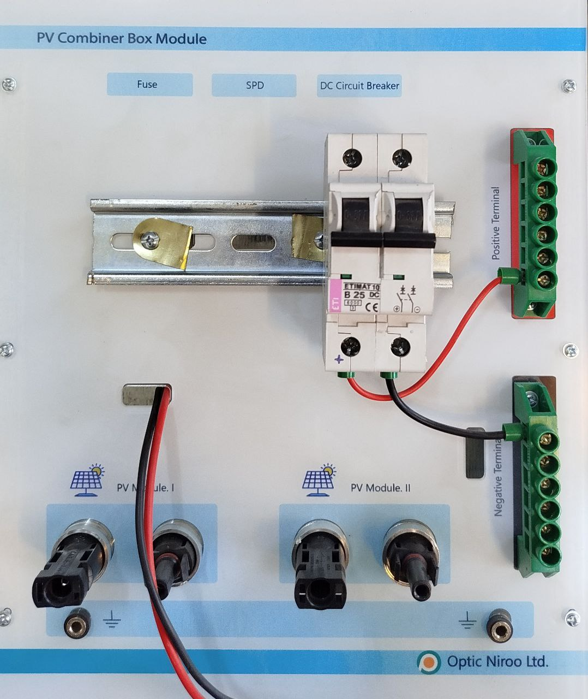

| نام تابلو: تابلو 08: کمباینر باکس |
سال ساخت: 2025 |
| دستهبندی: تابلو |
نام شرکت سازنده: اپتیکنیرو - Optic Niroo |
| کشور سازنده: ایران |
تابلو 08 «کمباینر باکس Combiner Box» دربردارنده موارد زیر است:
- 2 جفت کانکتور نری و مادگی برای اتصال به پنلهای خورشیدی بهعنوان ورودی
- 2 عدد جافیوزی ریلی برای 2 عدد فیوز سیگاری در مسیر ورودی پنلهای خورشیدی
- 1 عدد ماژول «جرقهگیر Surge Arrester» برای محافظت از پنلهای خورشیدی و دیگر بخشهای مدار هنگام بروز آذرخش
- 1 عدد فیوز مینیاتوری دو کنتاکته در خروجی ماژول «جرقهگیر Surge Arrester» برای قطع و وصل همزمان سیمهای مثبت و منفی خروجی تابلو
- 2 سری ترمینال برای اتصالهای مثبت و منفی خروجی تابلو
آزمایشهایی که این تابلو در آنها به کار رفته است
- -